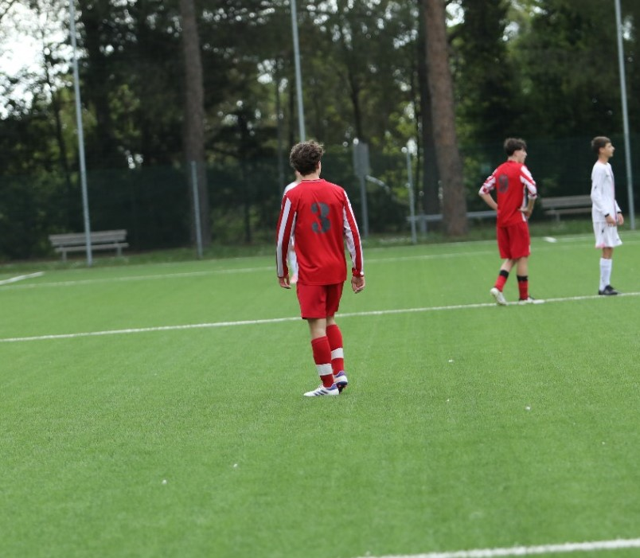

Ciao, sono Daniele Cardinali
Studente di Informatica all’ITIS “Enrico Mattei” di Recanati, appassionato di sviluppo software, reti e sport.
Il mio percorso
2022 – oggi
ITIS “Enrico Mattei” – Indirizzo Informatica
2023 – 2024
Certificazione ICDL Full Standard
2022 – 2023
Fondamenti di Programmazione
2022
Certificazione ICDL Standard
Competenze tecniche
HTML5 & CSS390%
JavaScript75%
Python80%
Git & GitHub85%
Passioni e hobby
CalcioPersonal trainingMusicaFilmSviluppo web